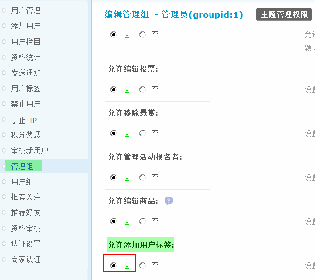
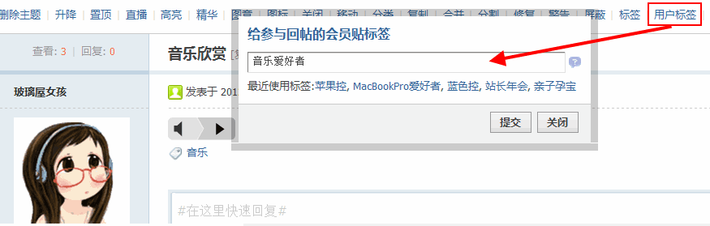
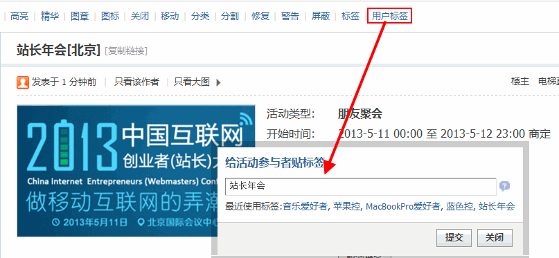
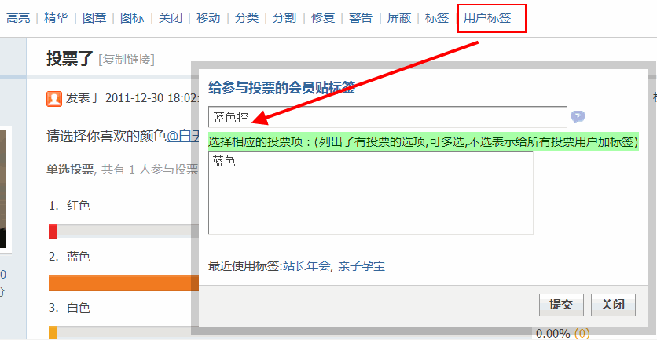
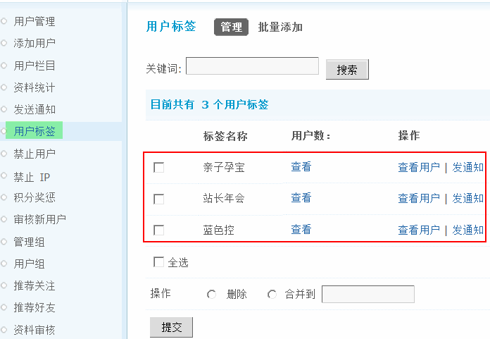
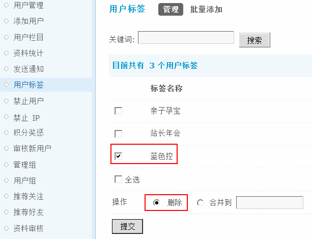
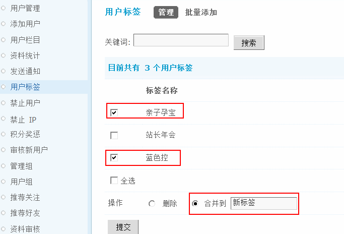
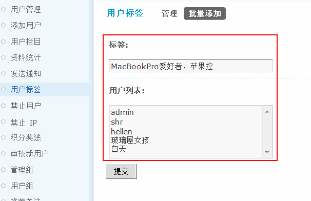

用户标签
应用场景
站长小五前段时间组织了一次车友俱乐部的聚会活动，活动是在线上报名，然后在线下开展，整个活动非常圆满，时间已经过去半年多，站点的发展也越来越好，小五想把站点内一些和汽车有关的精华内容推荐给这些爱车的朋友，以引起大家的关注，提高站点的人气，可是苦与时间有限，需要一个一个的查找相关朋友然后再推荐和分享，实在是让人头大。
用户标签功能，可以批量给会员打上标签，划分不同的用户群体，这样就可以方便的推送相关内容了。
用户需求
对社区用户进行精准营销和内容推送。
设计理念
对用户进行精准分组，可以推送相关的内容，还可以划分不同的用户
功能简介
1、管理组有独立的权限设置是否允许添加标签；
2、可以给普通帖添加用户标签；
3、可以给特殊主题添加用户标签；
4、后台添加用户标签项，可以单独管理，也可以批量添加用户标签；
5、打过的标签是有记录的；
6、一次操作可以打多个标签；
7、投票帖的标签是有关联的。
功能使用
一、开启添加用户标签权限
并不是所有管理组都可以添加标签，建议只开放给小部分管理人员使用。以“管理员”组为例，后台-管理组-管理员-管理权限-主题管理权限-允许添加用户标签，选择“是”
操作路径：【后台】=>【用户】=>【管理组】=>【管理权限】=>主题管理权限中可以设置是否“允许添加用户标签”这里选择“是”如下图所示：
二、前台添加用户标签
开启用户标签功能后，有相应权限的管理成员即可在帖子中添加用户标签了。
1、普通帖添加用户标签
在某个普通帖子中，点击帖子内容上方的“用户标签”即可为该帖子的所有回复者批量添加一个或多个标签。
2、活动主题添加用户标签
在活动帖子中，点击帖子内容上方的“用户标签”即可为参加该活动的所有用户批量添加一个或多个标签。
比较适用的场景我们在上面已经提到，网站通过发布帖子组织线上或者线下的活动结束后，管理员给参与活动的会员批量添加上与活动相关的标签。
3、投票帖添加用户标签
在投票帖子中，点击帖子内容上方的“用户标签”即可为参加该投票的所有用户批量添加一个或多个标签。
为投票帖添加用户标签时，可以选择为同一个选项的用户统一打标签。
三、后台管理标签
可以在后台查看已经添加的用户标签，查看每个标签对应的用户，并可以给他们发送通知，进行精准营销。
操作路径：【后台】=>【用户】=>【用户标签】
1、管理标签下的会员
点击标签名称后面的“查看”即可显示该标签下的所有用户数量。
点击标签名称后面的“查看用户”即可列出该标签下的所有用户，并同时跳转到“用户管理http://www.discuz.net/thread-2640492-1-1.html”页面，可对该标签下的会员进行直接管理。
点击标签名称后面的“发送通知”页面会直接跳转到“发送通知http://www.discuz.net/thread-2641529-1-1.html”页面，即可为该标签下的所有会员批量发送通知信息。
2、删除标签
在标签列表中选择要删除的标签名称，然后选择“删除”即可删除该标签。
也可以勾选“全选”批量删除所有标签。
3、合并标签
在标签列表中选择要合并的标签名称，然后选择“合并到”并添写新的标签名称即可把现有的一个或多个标签合并到一个新的标签中。
4、搜索标签
如果您添加的标签较多，可以输入关键词，即可进行模糊查询，成功搜索到相关的标签。
四、批量添加标签
点击“批量添加”输入标签名称即用户列表，提交即可添加成功。
可以给线下活动的用户批量贴标签，当只填写了标签，用户列表为空时，是批量添加用户标签，如果标签和用户列表都有输入，说明是给指定用户批量贴标签。
希望用户标签功能给各位站长带来更多的帮助和方便！